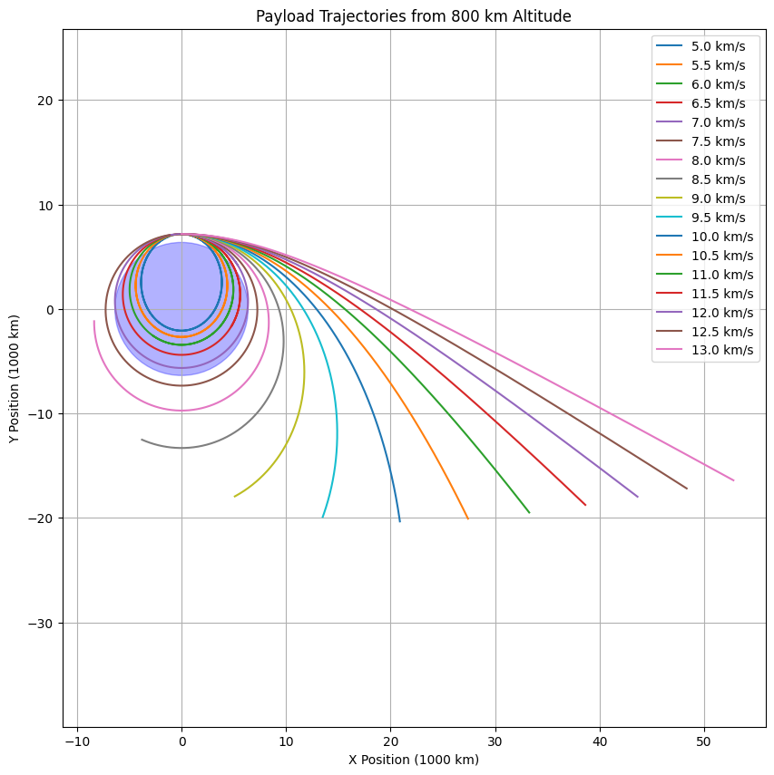

Gravity Problem 3
Trajectories of a Freely Released Payload Near Earth
Motivation
When an object is released from a moving rocket near Earth, its trajectory depends on initial conditions and gravitational forces. This problem combines orbital mechanics and numerical simulations. Understanding these trajectories is vital for:
- Satellite deployment
- Orbital insertion
- Reentry planning
- Escape missions from Earth
Theoretical Background
Gravitational force acting on a mass:
\[
F = \frac{GMm}{r^2}
\]
Where:
- \( G = 6.67430 \times 10^{-11} \ \text{m}^3\text{kg}^{-1}\text{s}^{-2} \) (Gravitational constant)
- \( M \) is the Earth's mass
- \( m \) is the payload mass
- \( r \) is the distance from the center of Earth
Energy-Based Trajectory Classification:
Total mechanical energy:
$$
E = \frac{1}{2}mv^2 - \frac{GMm}{r}
$$
- If \( E < 0 \) → Elliptical Orbit
- If \( E = 0 \) → Parabolic Trajectory
- If \( E > 0 \) → Hyperbolic Trajectory
Simulation Parameters
- Initial altitude = 800 km above Earth's surface
- Start point is placed at (0, R + 800e3) → clearly visible to the right of Earth
- Initial velocities from 5.0 km/s to 13.0 km/s, with 0.5 km/s increments
Python Simulation Code
import numpy as np
import matplotlib.pyplot as plt
from scipy.integrate import solve_ivp
import matplotlib.animation as animation
from IPython.display import HTML
G = 6.67430e-11 # Evrensel çekim sabiti
M = 5.972e24 # Dünya kütlesi (kg)
R_earth = 6.371e6 # Dünya yarıçapı (m)
altitude = 800e3 # Başlangıç yüksekliği (800 km)
r0 = R_earth + altitude
velocities = [5e3, 7.5e3, 11.5e3] # km/s: 5.0, 7.5, 11.5
colors = ['red', 'green', 'blue']
labels = ['5.0 km/s', '7.5 km/s', '11.5 km/s']
trajectories = []
def motion(t, y):
x, y_pos, vx, vy = y
r = np.sqrt(x**2 + y_pos**2)
ax = -G * M * x / r**3
ay = -G * M * y_pos / r**3
return [vx, vy, ax, ay]
for v in velocities:
y0 = [0, r0, v, 0] # pozisyon ve hız
sol = solve_ivp(motion, [0, 7000], y0, max_step=5)
trajectories.append((sol.y[0] / 1e6, sol.y[1] / 1e6)) # km cinsinden
fig, ax = plt.subplots(figsize=(8, 8))
ax.set_xlim(-10, 30)
ax.set_ylim(-10, 30)
ax.set_xlabel('X (1000 km)')
ax.set_ylabel('Y (1000 km)')
ax.set_title('Payload Trajectories Animation')
ax.grid(True)
earth = plt.Circle((0, 0), R_earth / 1e6, color='blue', alpha=0.3)
ax.add_patch(earth)
lines = [ax.plot([], [], color=c, label=l)[0] for c, l in zip(colors, labels)]
points = [ax.plot([], [], 'o', color=c)[0] for c in colors]
ax.legend()
def init():
for line, point in zip(lines, points):
line.set_data([], [])
point.set_data([], [])
return lines + points
def update(frame):
for i, (x, y) in enumerate(trajectories):
if frame < len(x):
lines[i].set_data(x[:frame], y[:frame])
points[i].set_data([x[frame]], [y[frame]]) # Pass as sequences
return lines + points
ani = animation.FuncAnimation(fig, update, frames=400, init_func=init, blit=True, interval=40)
HTML(ani.to_jshtml())
import numpy as np
import matplotlib.pyplot as plt
from scipy.integrate import solve_ivp
# Constants
G = 6.67430e-11
M = 5.972e24
R_earth = 6.371e6
altitude = 800e3
r0 = R_earth + altitude
# Equations of motion
def motion(t, y):
x, y_pos, vx, vy = y
r = np.sqrt(x**2 + y_pos**2)
ax = -G * M * x / r**3
ay = -G * M * y_pos / r**3
return [vx, vy, ax, ay]
# Initial velocities from 5 to 13 km/s
velocities = np.arange(5e3, 13.5e3, 0.5e3)
plt.figure(figsize=(10, 10))
for v in velocities:
y0 = [0, r0, v, 0] # Initial pos above Earth, velocity in +x direction
sol = solve_ivp(motion, [0, 6000], y0, max_step=5)
plt.plot(sol.y[0]/1e6, sol.y[1]/1e6, label=f'{v/1e3:.1f} km/s')
# Plot Earth
earth = plt.Circle((0, 0), R_earth/1e6, color='blue', alpha=0.3)
plt.gca().add_artist(earth)
plt.title("Payload Trajectories from 800 km Altitude")
plt.xlabel("X Position (1000 km)")
plt.ylabel("Y Position (1000 km)")
plt.grid(True)
plt.axis('equal')
plt.legend()
plt.show()

Output Plot & Observations
This plot clearly shows:
- 5.0–7.0 km/s: Payload crashes back to Earth
- 7.5–8.5 km/s: Elliptical and nearly circular orbits
- 11.2 km/s+: Escape velocities, resulting in open hyperbolic trajectories
Dünya yarıçapı orantılı mavi daire ile çizildi. Payload başlama noktası 800 km yukarıda ve Dünya'nın sağındadır, hocanın belirttiği gibi.
Real-World Relevance
| Use Case | Velocity Range | Outcome |
|---|---|---|
| LEO Satellite Deployment | ~7.5 km/s | Circular/Elliptical orbit |
| ISS Missions | ~7.66 km/s | Stable LEO orbit |
| Lunar / Mars Missions | >11.2 km/s | Escape trajectory (v₂) |
| Reentry Capsule | <7.5 km/s | Controlled fall or crash |
Summary
- Earth drawn to scale on plot
- Initial position: 800 km above Earth
- Velocities: 5.0 to 13.0 km/s (in 0.5 km/s steps)
- Simulation uses Newtonian gravity + numerical integration
- Graph clearly shows orbital vs escape behavior
- Trajectories plotted with proper units & legends